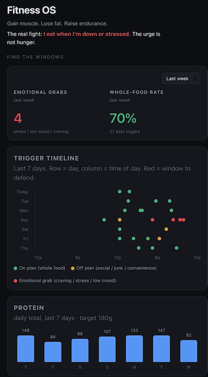

I don't have a fitness problem. I have a logging problem. Every app I've tried, I've quit. So I stopped shopping for one and wrote the spec instead.

Neither one is diet. Neither one is discipline.
I can train. I look fine. So I've never had to look closely at how I actually eat.
But my nutrition and quality is crap. With ADHD my food intake fuels my sluggishness. I also stress eat. That's the trap.
Open the app, search a database, pick the closest match, set a portion from a dropdown. Repeat for every item. Four times a day.
Ninety seconds of friction a meal. I last about a week. Then I miss one, then a day, and the log has a hole in it. Everything was built on the log, so the whole system dies with it.
Create more awareness of what and when I'm eating, so I make better choices. Learn about my patterns when things go off the rails. And create near zero friction to accomplish this.
The bet: remove the interface, and the data survives long enough to be worth something.
No app. No clicking. I talk. I say what I ate, or I send a photo. Claude estimates the macros and the variables I want tracked, and writes it to a log.
The log feeds one dashboard that shows me my patterns. That's the whole bet.
A few chat sessions. No code.
I'm not clicking anything. Food logging apps always feel like a chore to me, and my ADHD ass avoids chores at all costs.
Speak it or photograph it. Claude estimates the macros and the handful of fields I care about. That's the entire input. No search, no database, no portion dropdown. Logging a meal now costs me about what texting my wife costs me.
An AI guessing macros from a photo is only useful if the guesses aren't fiction. I cross-checked against SnapCalorie, a free photo-based estimator built by ex-Google Lens researchers.
Not to adopt it. To see whether my numbers were in the right neighborhood. They were. Close enough that the gap doesn't change a single decision I make.
The part I didn't expect: SnapCalorie is good. Photo, voice, a hundred-plus nutrients, free. It solves the input problem better than most. I still didn't want it. That's when I learned the input was never the only problem.
I don't care that calories are perfectly estimated. I care about ballpark. I'm not optimizing to cut 1% bodyfat. I'm trying to infuse a healthy lifestyle habit.
I care about seeing how my eating matches my energy state. I care about consuming whole foods and understanding how often that is happening. I don't want to weigh out my food.
Every app shows calories remaining and can show macros. Knowing those numbers can be helpful, but they've never once stopped me from blowing out the day on a bag of Oreos. My failure mode is specific: I eat when I'm down, stressed or bored. The urge isn't hunger.
So the tracked variable is what I ate, but also why.
One screen. Every eat colored by reason and plotted by time of day. Whole-food rate. Protein against target. Energy as an early warning. Nothing else.
No company could ship that screen. It's built around one man's specific failure mode. Which is why it took a few chat sessions instead of a funding round.
Every quote below is verbatim from the build sessions.
"Best Shape Control Panel" became Fitness OS.
No meal has been flagged green as on plan. That doesn't make any sense because I have a 60% whole foods eating rate.
The logic was reading "Hungry" as a risk. Nineteen of my twenty-six eats were hungry eats, so green never appeared once.
First fix made everything green except cravings. Also wrong.
I ate at Raisin Cane's the other day. I don't exactly call that on plan. That's more of a convenience or social.
The real discriminator isn't hunger, it's food quality. Green = whole food. Red = emotional grab. Yellow = off plan: the junk, the convenience, the social.
The meal log pinned to the top and everything scrolled behind it.
I want my metrics and the triggers at the top.
The trigger timeline should have a y axis. What are those now, days?
They were nothing. The vertical position was meaningless jitter to stop the dots overlapping. Now every row is a day and every column is a time of day, so the red can't hide inside an average. It clusters, and I can see the window.
Week, month, all time, on the two numbers that matter. So now I can actually see trends on different timelines, and can see every meal I've ever logged.
It was a live URL with no source behind it, built on my phone.
This is a problem of building something on Claude AI or on the go and the files not getting into my proper repositories.
Now it's a private repo wired to auto-deploy. Every edit has to pass through Git, so it can't drift again.
This list didn't exist when I started. It exists because I used the thing.
Manual entry and a trend line. The one number I've been avoiding.
Auto pull every workout from Garmin Connect.
Add energy and weight from inside the app, not just by talking to Claude.
Point the analysis at the whole log. Which windows, which triggers, what one thing to change this week.
That's the difference between a tool you bought and a tool you own.
"I'm still logging" is the thing I have never once managed with software somebody else designed. Given the premise, that's the only result that matters yet.
I'm also shocked at how well I've eaten overall, even when needing a snack. It feels good to see meals in green all between the noon and 8pm window.
Last year, doing something like this was unheard of for any non-engineer. Today, it's shockingly possible to fix a specific problem in your life, learn a ton, and have fun doing it. That's what AI unlocks.
The transferable move isn't the app. It's the sequence. I didn't shop for a tool and bend myself around it. I defined, precisely, how I wanted to interact with the problem, then had the machine build to that definition.
If you've quit system after system and quietly concluded you're the problem, you're probably not. You've been renting interfaces built for the average of everyone. You are not the average of everyone.
I didn't get more disciplined. I got a spec, and something that could build to it. The Chief AI Accelerator is where founders and executives stop adapting themselves to software and start specifying the systems they actually run on.
Same judgment you already have, finally pointed at the work that moves.
See how the Accelerator works →